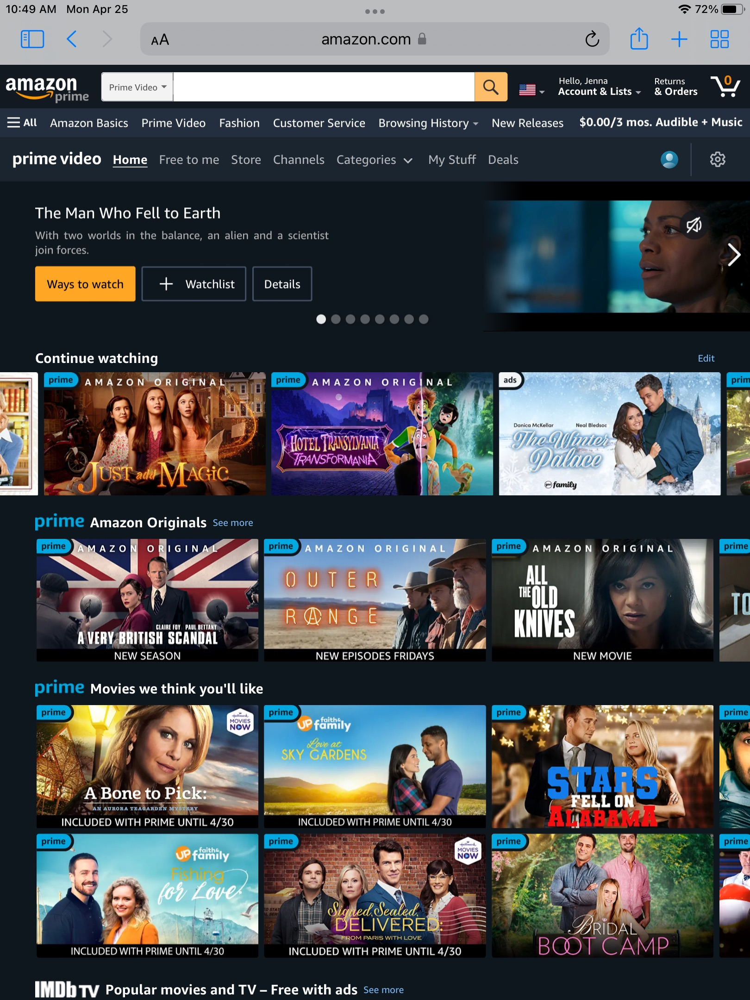
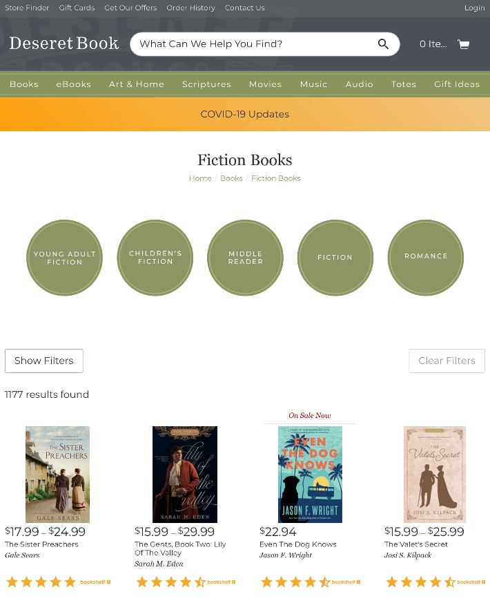
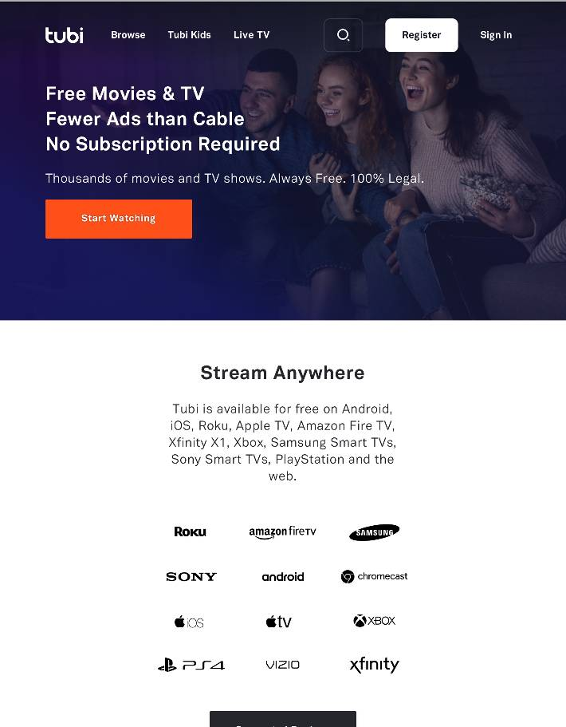

Hicks Law
Amazon Prime
Amazon Website The idea behind Hick's law is that the Web developer creates a website that makes it easier to find things and spend less time making decisions. The goal is that the user is able to make use of the website as soon as possible to achieve the best results. This law is important because the user is most likely to come back when they have fast results on your website and can find and do what they came to your website to do. Amazon's Prime video Webpage on their website achieves this principle because they have grouped all the video's together according to their genre and is easily accessed by clicking on the categories tab. It also makes it quicker to find the video you were watching, so that you can continue watching it without remembering what video you watched yesterday. I also noticed that they have options to view the videos that were just added. This helps the user know what videos Amazon offers.
White Space
Deseret Book
Deseret Book Website This is a great example of using white space and having a clean design because these web developers make the white space evenly and well balanced. Instead of squeazing the items together and making it harder to read the book title or item they seperate the items with white space. They also make it easier to read and click on the filtered results to only select a certain genre. Another thing that they have done is use white space to separate the show filters and clear filters button to indicate to the user that they perform different functions. It makes it so that the user is less likely to accidentally click on the clear functions button. Overall, white space is important to make the webpage look and feel clean,organized, and professional.
Visual Hierarchy
Tubi
Tubi Website Visual Hierarchy refers to the principle of making content that is important stand out among other content. Tubi does a great job of doing this because they use visual design to draw the user's eye to the start watching button. Comparedto the other content on the page, they use a different color, makes it bigger than the other buttons, and makes sure that it is one of the first things the user sees on the web page because they want users to watch movies and shows. Another thing that they do is increase the font on the header so that the user immediately reads and sees that Tubi is a free video platform drawing users in to use their service. They also make the register button stand out, so that users know where they can go to sign up. Visual Hierarchy is important because what the user sees indicates a message to the user of the purpose of your website and values of the company,business, or organization. If the user doesn't like what they see, they might go to another company or business for the service they need which can hurt companies, businesses, and organizations.